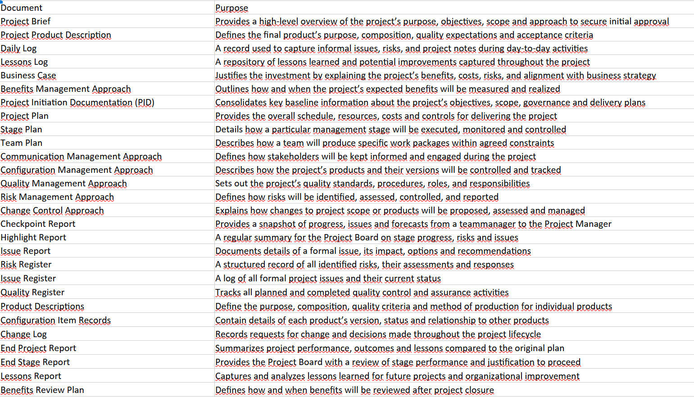
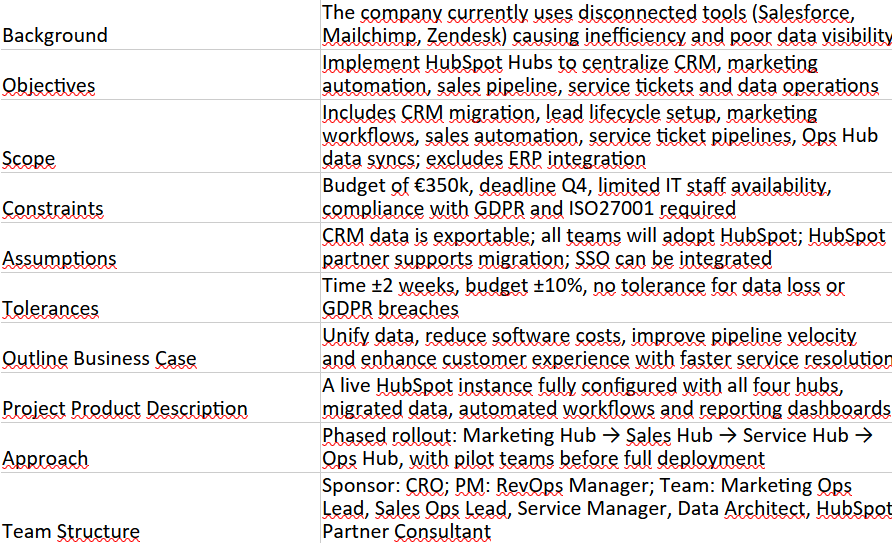

PRINCE2 Template for beginners
Starting with PRINCE2 can be hard, especially if your company has no established project management workflow. Here you can find a ready-to-use template to help you quickly set up a structured, scalable project environment. Whether you are managing your first project or introducing PRINCE2 to your organization, these resources will give you a good start.

Here is the same template with an example project:
This can help as an orientation, based on a internal project to integrate Hubspot in the company and daily work.

Download Example Project (Excel)